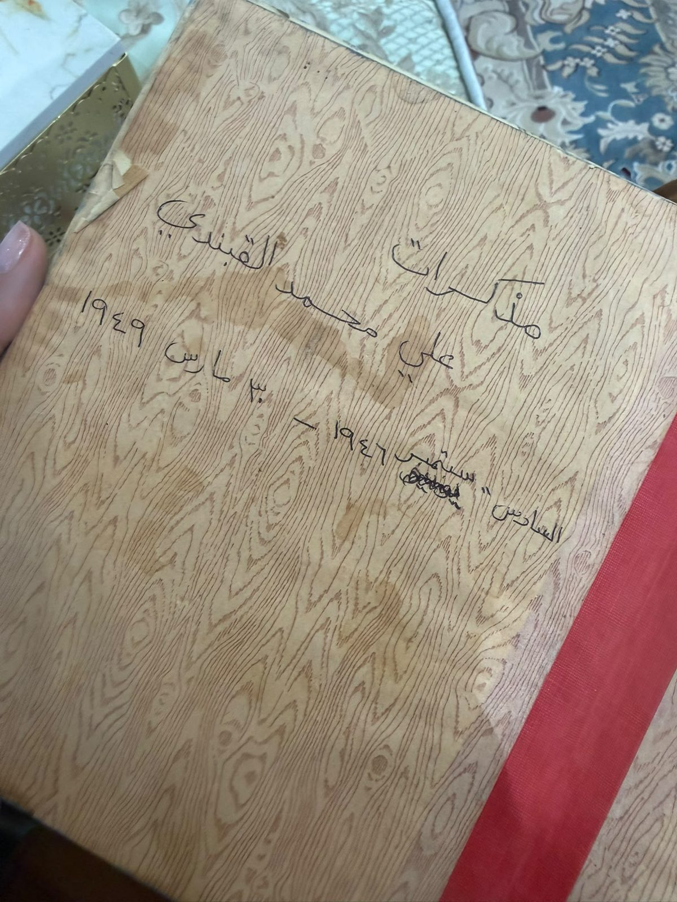
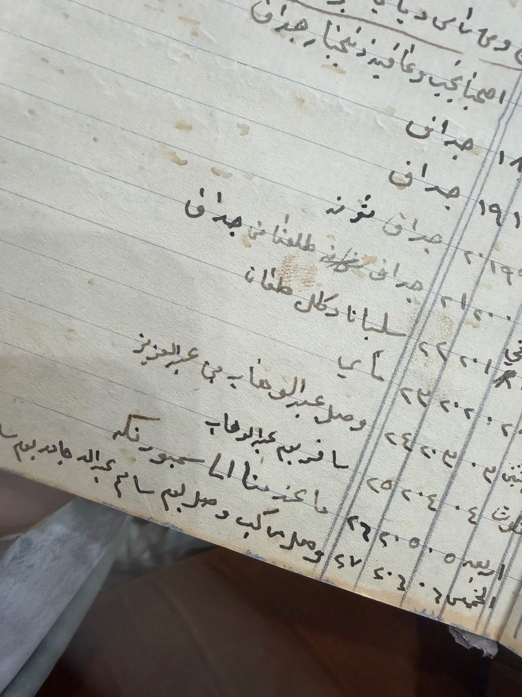

December 1946 to January 1947 · Handwritten sea diary (sixth volume)
Ali Mohammed Al-Qabandi's sea diary: the booms of Abdulwahab bin Abdulaziz and his son Bader
What it is
Ali Mohammed Al-Qabandi kept a day by day diary at sea, ruled into columns for the day, the date and the wind, with a line on what happened. In the 1946 to 1947 season he records that the boom of Bader bin Abdulwahab bin Qatami arrived, then marks the start of the English year 1947. A later page records that Abdulwahab bin Abdulaziz arrived and that Abdulwahab's boom sailed.
Why it matters
A sailor from another family, writing at the time, shows father and son each running their own boom on the long voyages in 1946 and 1947.
Who is meant
A father Abdulwahab bin Abdulaziz and a son Bader bin Abdulwahab bin Qatami match Abdulwahab Abdulaziz Al-Qatami (died 1963) and his son Bader Abdulwahab Al-Qatami.
Page copies



Original text
English translation
Notes
Only the lines that are clear in the photos are transcribed; the dots mark lines left out. The cover reads «مذكرات علي محمد القبندي، السادس، سبتمبر ١٩٤٦ إلى ٣٠ مارس ١٩٤٩».
Others named
Sources
Photographed by Noor Al-Qatami, November 2026. Copies are saved in the family Drive.
Archive reference
- Private notebook · مذكرات علي محمد القبندي، السادس، ١٩٤٦ إلى ١٩٤٩
How this text was made: Partial transcription of the clear lines. English translation by Claude; please review.
Open in the interactive site